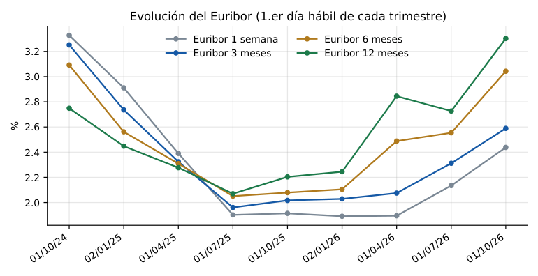
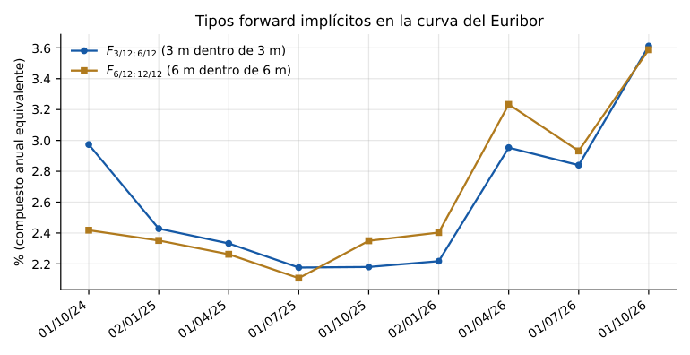
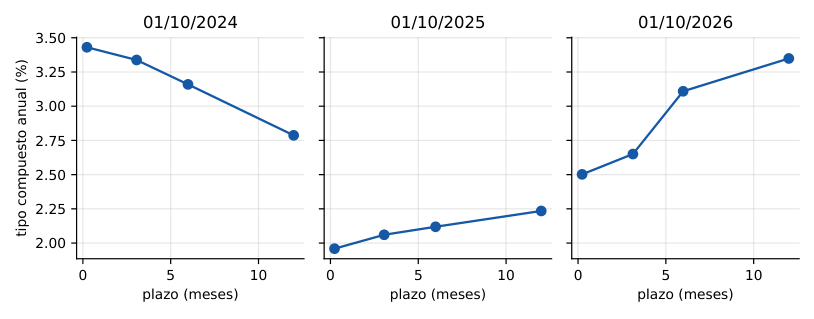
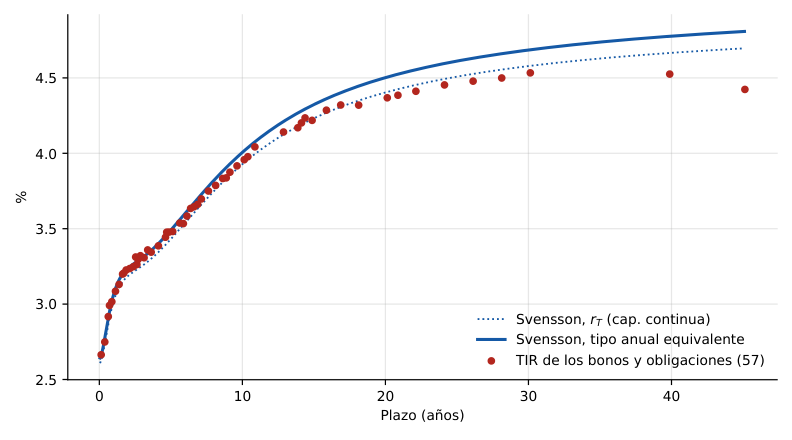
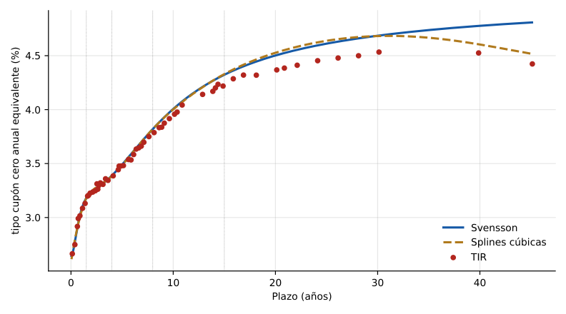

Guía de estudio de los cuatro temas: valoración de bonos (Tema 1), estructura temporal de los tipos de interés (Tema 2), riesgo de tipo de interés, duración e inmunización (Tema 3) y modelos en tiempo continuo (Tema 4), más el anexo de estimación de la ETTI. Cada resultado se deduce, se calcula a mano con los números de los apuntes y se puede reproducir con un laboratorio interactivo y con código en R y Python.
| Bloque | Contenido | Ejemplos de los apuntes que se resuelven |
|---|---|---|
| Tema 1 | Bono con cupones y cupón cero, precio, cupón corrido, precio ex-cupón, bonos indexados, convenciones de días | Ej. 1–7, bono Guatemala 30/360, ficha Refinitiv del bono a 50 años, boletín SENAF |
| Tema 2 | Tipo cupón cero, ETTI, arbitraje, TIR y sesgo del cupón, forwards, certidumbre, hipótesis TPE/TPL/segmentación, tipos continuos | Ej. 2.1, 3.1, 4.1, 4.2, 5.1, 6.1–6.3, 7.1 (Euríbor 28-jun-2013) |
| Tema 3 | Elasticidad, duración, convexidad, carteras, VPB, evidencia empírica, riesgo de reinversión, inmunización simple y múltiple, variaciones no paralelas | Ej. 3.4, bono 4,85 31.10.20, carteras 4.2 y 4.3, inmunización de 1-ene-2016, ejercicio de bonos A, B, C |
| Tema 4 | Wiener, difusión de Itô, lema de Itô, Vasicek, CIR, ecuación de valoración, simulación y opciones sobre bonos | Deducciones paso a paso y laboratorio de trayectorias |
| Anexo ETTI | Bootstrapping, aproximación funcional, Nelson–Siegel, Svensson, splines cúbicas, Vasicek–Fong, ponderaciones | Bono 31-ene-2008 frente a strips (23-sep-2004), método de estimación |
| Trabajos, fórmulas, código, preguntas | Formulario completo, código R y Python equivalente, preguntas de examen resueltas y tarjetas | — |
Cada apartado sigue el orden idea → fórmula → ejemplo numérico de los apuntes → laboratorio. Los bloques de código tienen pestañas R y Python con los mismos pasos. Los números de cada ejemplo se han recalculado y coinciden con los de los apuntes salvo donde se indica una errata.
Idea que lo une todo: un bono es una promesa de flujos de caja fijados de antemano. Su valor es la suma de esos flujos descontados al tipo de mercado; como el tipo de mercado cambia, el precio cambia en sentido contrario, y además crece mecánicamente con el paso del tiempo (cupón corrido).
Los bonos y obligaciones son títulos que representan una parte alícuota de un préstamo. Se estudian solo aquellos con flujos predeterminados (excluidos indexados, amortizables anticipadamente o convertibles; la única excepción son los indexados a la inflación, §1.7). Según el pago de intereses hay dos modalidades: bonos con cupones (americanos) y bonos cupón cero (un único flujo al vencimiento).
\(R\) es el tipo efectivo anual de valoración; los flujos se descuentan a \(t=0\).
El bono cotiza por debajo de la par porque su cupón (4 %) es inferior al tipo de mercado (5 %): nadie lo compraría a 1.000 € teniendo alternativas al 5 %, así que el precio baja hasta que la rentabilidad del bono coincide con la del mercado.
Como \(0<1-(1+R)^{-n}<1\): si \(R
Entre la contratación y la liquidación hay hasta una semana (aquí D+2). El precio se calcula en la fecha valor. El primer flujo se descuenta con exponente igual a la fracción del año que falta para el próximo cupón y los demás suman años enteros.
Ejemplo 2. Boletín de 1-mar-2016: ES00000123U9, O EST 5,40 31.01.23, precio ex-cupón 129,230, TIR 1,00 % (con tres decimales 1,002 %). Fecha valor 3-mar-2016; entre el 31-ene-2016 y el 31-ene-2017 hay 366 días (29 de febrero), faltan 334.
(la suma recorre seis cupones de 54 €; el séptimo flujo es el último, 1.054 €). El Boletín publica 129,230 %: es el precio ex-cupón (§1.4).
Entre emisión y primer cupón (\(0 Por el mero paso del tiempo el precio sube a la tasa \(R\) (efecto del cupón corrido) hasta el pago del cupón, momento en que cae exactamente \(C\). Argumento: de dos bonos iguales salvo que B paga sus cupones 9 meses después de A, el B vale más (siempre puede invertir sus flujos 9 meses), y el valor de B es el que tendrá A dentro de 9 meses. Aproximación lineal de \(V_t\). Las cotizaciones se dan ex-cupón: el precio ex-cupón refleja las condiciones del mercado. Con el precio bruto el bono 2 (cupón 4,40 % < 4,50 %) parece cotizar sobre la par, contradiciendo la regla; con el ex-cupón la regla se cumple. Por eso se cotiza ex-cupón. Ejemplo 4. Del Ejemplo 2: \(\mathrm{CC}=54\cdot\frac{366-334}{366}=4{,}72\) €, y \(P^*=1297{,}01-4{,}72=1292{,}29\) € (129,229 %), que coincide con el Boletín (129,230; el rendimiento real es 1,0001892 %). Dos fuerzas: el paso del tiempo (cupón corrido y caída al pagar el cupón) y el tipo de valoración (relación inversa por coste de oportunidad). En el Boletín el precio ex-cupón de la obligación ES0000012783 5,50 30.07.17 (2006–2010) se mueve en sentido contrario a su TIR.Ejemplo 3: tres bonos al 4,50 % con vencimiento en 3 años y 182 días
Bono Cupón Precio bruto P Cupón corrido Ex-cupón P* Frente a la par 1 3,75 % 994,80 37,5·183/365 = 18,80 976,00 bajo la par 2 4,40 % 1.018,65 44·183/365 = 22,06 996,59 ligeramente bajo 3 5,90 % 1.073,66 59·183/365 = 29,58 1.044,08 sobre la par Determinantes del precio
Un único flujo \(PA\) (precio de amortización) en \(n\). Si \(PA=N\) se emite «al descuento» (Letras del Tesoro a 6, 12 y 18 meses). No hay cupón corrido: precio y precio ex-cupón coinciden; con tipo constante el precio crece exponencialmente hasta \(PA\).
Ejemplo 5 (Letra). ES0L01702171, 17-feb-2017, valor 3-mar-2016 (351 días), tipo \(-0{,}031\,\%\): \(P=\dfrac{1000}{1+(-0{,}00031)\cdot351/360}=1000{,}30\) € (100,030 %). Tipos negativos ⇒ precio sobre el nominal.
Ejemplo 6 (strip). ES0000011983 CUP-0 31.01.24 al 1,44 %, valor 2-mar-2016: 335 días hasta el 31-ene-2017 (con 29 de febrero ⇒ 335/366) y siete años completos: \(P=\dfrac{100}{(1{,}0144)^{7+335/366}}=89{,}300\,\%\). Los strips son cupón cero sintéticos que surgen de segregar cupones y principal.
Al acercarse el vencimiento la sensibilidad del precio a los tipos se atenúa (el día del vencimiento el precio es 100 % sea cual sea el tipo): adelanto de la duración (Tema 3).
El nominal se revaloriza con el coeficiente de indexación (IPC ex-tabaco). El índice de referencia interpola linealmente el IPC de los meses \(m-3\) y \(m-2\) (se conoce con mes y medio de adelanto).
TIR real. Con inflación nula los flujos serían \(cN\) y \(cN+N\) y la TIR real \(r\) resuelve \(P=\sum cN(1+r)^{-t}+N(1+r)^{-n}\). Con indexación, la TIR nominal \(k\) cumple \((1+k)=(1+r)(1+\pi)\) (Fisher) y si \(\mathrm{CI}_t/\mathrm{CI}_0=(1+\pi)^t\) la rentabilidad real es \(r\) sea cual sea la inflación: protege el poder adquisitivo.
Ejemplo 7. ES00000127C8 OBL 1,00 30.11.30 IND, 7-abr-2016: \(\mathrm{IR}=98{,}67+(98{,}83-98{,}67)\cdot\tfrac{6}{30}=98{,}702\); índice base (30-nov-2014) 100,33319 ⇒ \(\mathrm{CI}=0{,}98374\). Cupón corrido (129 días de 366): \(1\cdot0{,}98374\cdot129/366=0{,}346728\). Cotización 98,992 %: liquidación \(98{,}992\cdot0{,}98374+0{,}346728=97{,}729\,\%\). La TIR del Boletín (1,06 %) es real; frente a una obligación no indexada que amortiza cuatro meses antes con TIR nominal 1,97 %, la diferencia aproxima la inflación esperada más una prima de riesgo de inflación (break-even).
Ejemplo del bono de Guatemala (7,125 % anual, amortización 15-dic-2027, último cupón 16-dic-2024, fecha valor 23-abr-2025, 30/360 US): días desde el último cupón \(=(2025-2024)\cdot360+(4-12)\cdot30+(23-16)=127\); días entre cupones \(=360+(6-12)\cdot30+0=180\). Cupón semestral 3,5625.
Con 30/360 US y las fechas del ejemplo se obtienen 127 y 180 días (el primer cupón real del apunte vence el 16/06/2025; entre 16/12/2024 y 16/06/2025: 180 días 30/360).
Refinitiv: bono del Reino de España 1,450 % 31-oct-2071. Contratación 18-oct-2022, liquidación 20-oct-2022 (2 días hábiles), precio limpio 46,7955, 354 días de cupón corrido, precio sucio 48,2018, TIR 3,900457 %.
| Magnitud | Ficha Refinitiv | Calculada con las fórmulas de la guía |
|---|---|---|
| Cupón corrido | 1,406301 | 1,45·354/365 = 1,406301 |
| Precio sucio | 48,201801 | 46,7955 + 1,406301 = 48,201801 |
| TIR | 3,900457 % | 3,9007 % |
| Duración / modificada | 27,1857 / 26,1652 | 27,185 / 26,164 |
| Convexidad | 1.026,39 | 1.026,26 |
| BPV (por 100 de nominal) | 0,1261 | 0,12612 |
Coincide salvo diferencias de decimales por el calendario (la ficha usa liquidación del último cupón el 2-nov por día hábil). La duración y la convexidad se definen en el Tema 3. Se puede reproducir en el laboratorio de duración con cupón 1,45 %, TIR 3,9007 %, 50 años y fracción 0,0301.
SENAF Deuda Pública, 21-sep-2026 (275 referencias, 30 por página): para cada bono, lado de compra (nº de operaciones, importe, TIR, precio) y de venta (precio, TIR, importe, nº). Ejemplos de la primera página, en % del nominal:
| Título | Compra TIR | Compra precio | Venta precio | Venta TIR | Precio medio |
|---|---|---|---|---|---|
| BON 0,000 01/2027 | 2,811 | 99,0100 | 99,0450 | 2,710 | 99,0275 |
| BON 2,350 03/2029 | 3,387 | 97,5100 | 97,5500 | 3,370 | 97,5300 |
| BON 2,500 05/2027 | 3,019 | 99,6450 | 99,6950 | 2,945 | 99,6700 |
| BON 3,500 05/2029 | 3,372 | 100,3100 | 100,3550 | 3,355 | 100,3325 |
| OBL 0,100 04/2031 | 3,478 | 85,8650 | 85,9250 | 3,462 | 85,8950 |
| OBL 0,700 04/2032 | 3,561 | 85,7000 | 85,7700 | 3,546 | 85,7350 |
Precio de compra < precio de venta y TIR de compra > TIR de venta: es el diferencial oferta–demanda. La estimación de la ETTI parte de estos precios (Anexo y trabajos). Los precios cotizados son ex-cupón: hay que añadir el cupón corrido para obtener el precio de liquidación.
Idea que lo une todo: no existe «el» tipo de interés. En un mismo mercado y día se negocian tipos distintos según el plazo. El tipo cupón cero mide el precio «puro» del tiempo; los tipos forward se deducen de la ETTI y son la clave para entender por qué la curva tiene su forma.
Euríbor a 28-jun-2013 (oferta): 1 semana 0,094 %; 2 semanas 0,102; 3 semanas 0,112; 1 mes 0,123; 2 meses 0,176; 3 meses 0,218; 4 meses 0,257; 5 meses 0,293; 6 meses 0,335; 7 meses 0,370; 8 meses 0,400; 9 meses 0,435; 10 meses 0,463; 11 meses 0,495; 12 meses 0,527. En Deuda Pública (1-jul-2013) los tipos oscilaron del 0,5 % al plazo más corto al 5,177 % al más largo. Pero la forma ha sido muy dispar: el 31-dic-2002 el Euríbor era decreciente con el plazo, y la Deuda española en 1993 era decreciente y en 1997 tenía forma de «cuchara».
Es la TIR anual de comprar hasta el vencimiento un bono cupón cero de la máxima calidad crediticia y liquidez con vencimiento en ese plazo:
Debe ser un cupón cero porque un bono con cupones devuelve parte de la inversión antes del vencimiento y su TIR es una media de rentabilidades de varios plazos. Debe ser de máxima calidad y liquidez para que el tipo no incluya primas de riesgo (en España, la Deuda Pública; también se usa el mercado de swaps, IRS, más líquido).
Definición 2.2. La ETTI es la relación funcional, en un momento dado, entre los tipos al contado y los plazos.
| Plazo | Precio P | Amortización PA | Ecuación | Tipo \(R_t\) |
|---|---|---|---|---|
| 1 | 95,238 | 100 | 95,238(1+R₁) = 100 | 5,00 % |
| 2 | 93,450 | 105 | 93,450(1+R₂)² = 105 | 6,00 % |
| 3 | 89,408 | 108 | 89,408(1+R₃)³ = 108 | 6,50 % |
| 4 | 88,558 | 115 | 88,558(1+R₄)⁴ = 115 | 6,75 % |
| 5 | 89,751 | 125 | 89,751(1+R₅)⁵ = 125 | 6,85 % |
Un bono con cupones se replica con una cartera de cupón cero (uno por cada flujo). Dos activos con los mismos flujos tienen el mismo precio (ausencia de arbitraje):
Si el bono cotizase a 950 €: se emite el bono (se cobran 950 €) y se compra la cartera de 4 strips (907,68 €); los flujos de la cartera pagan el bono y se gana 42,32 € sin riesgo. La presión vendedora sobre el bono y compradora sobre los strips cierra la diferencia. Si \(P<\) cartera, se hace la operación contraria.
En la práctica se trabaja con un único tipo para el bono: la TIR, el tipo \(y\) que iguala el valor actual de los flujos con el precio: \(P=\sum \mathrm{CF}_t(1+y)^{-t}\). Hay relación biunívoca precio–TIR y es observable (el Boletín da la TIR). Pero no es criterio exclusivo de selección.
| Bono a 5 años | Cupón | Precio con la ETTI | TIR |
|---|---|---|---|
| Ej. 4.1 | 5 % | 925,92 € | 6,797 % |
| Bono A (4.2) | 2,5 % | 821,96 € | 6,821 % |
| Bono B (4.2) | 7,5 % | 1.029,88 € | 6,776 % |
| Cupón cero a 5 años | 0 % | 89,751 (%) | 6,85 % |
Con la misma ETTI y sin arbitraje, tres bonos a cinco años tienen TIR distintas: el cupón cero (6,85 %), A (6,82 %) y B (6,77 %). Los bonos con cupones son carteras de cupón cero a 1, 2, …, 5 años y su TIR es una media de esas rentabilidades; con ETTI creciente la media es inferior a la del cupón cero, y menor cuanto más peso tengan los flujos cortos (B, con mayor cupón). Con ETTI decreciente todo sería al revés.
Sesgo del cupón: TIR del bono menos TIR del cupón cero con el mismo vencimiento. Crece con el cupón y con la pendiente de la ETTI. Curva de rentabilidad: relación entre la TIR de los bonos negociados y su plazo; es una aproximación sesgada a la ETTI (los Gráficos 2, 4 y 5 del tema son curvas de rentabilidad).
Es el tipo que debería regir en \(t_1\) para que da igual invertir hasta \(t_2\) que invertir hasta \(t_1\) y reinvertir al forward.
Ejemplo 5.1. Con la ETTI del Ejemplo 2.1: \((1,06)^2=(1,05)(1+F_{1,2})\Rightarrow F_{1,2}=7,01\,\%\) (7,00952 %). Los demás:
| Desde t=1 | F₁,₂ | F₁,₃ | F₁,₄ | F₁,₅ | F₂,₃ | F₃,₄ | F₄,₅ |
|---|---|---|---|---|---|---|---|
| Forward (%) | 7,010 | 7,258 | 7,340 | 7,318 | 7,507 | 7,504 | 7,251 |
\(F_{1,3}\) es el tipo a dos años vigente dentro de un año que hace indiferente comprar un cupón cero a 3 años o uno a 1 año y reinvertir en uno a 2 años. Con capitalización continua: \(f_{t_1,t_2}=\dfrac{r_{t_2}t_2-r_{t_1}t_1}{t_2-t_1}\).
Si los tipos futuros fuesen conocidos, el forward debe coincidir con el tipo futuro: \(F_{t_1,t_2}={}_{t_1}R_{t_2-t_1}\). Si no, hay arbitraje.
Ejemplo 6.1. Con \(R_1=5\,\%\), \(R_2=6\,\%\) y \({}_1R_1=6,5\,\%\ne F_{1,2}=7,01\,\%\): A (invertir 2 años) da \(1.000.000\cdot1,06^2=1.123.600\) €; B (1 año y reinvertir) da \(1.000.000\cdot1,05\cdot1,065=1.118.250\) €. Se pide prestado un millón al 5 % (1 año) y al 6,5 % (refinanciación), se invierte en el cupón cero a 2 años y se gana \(1.123.600-1.118.250=5.350\) € sin riesgo. Con horizonte de 1 año: \(V_1^{A^*}=1.000.000\cdot1,06^2/1,065=1.055.023\) € frente a \(1.050.000\) €. La presión de mercado reduce \(F_{1,2}\) hasta igualarlo a \({}_1R_1\).
En certidumbre el tipo a largo plazo es una media geométrica de los tipos a corto actuales y futuros. ETTI creciente ⇒ se anticipan subidas de los tipos a corto; decreciente ⇒ bajadas; plana ⇒ estabilidad.
Ejemplo 6.2. Con la ETTI creciente del Ejemplo 2.1 se anticipa el tipo a un año: \({}_1R_1=7,01\,\%\), \({}_2R_1=7,51\,\%\), \({}_3R_1=7,50\,\%\), \({}_4R_1=7,25\,\%\). Y la ETTI de dentro de un año: \({}_1R_1=7,01\), \({}_1R_2=7,26\), \({}_1R_3=7,34\), \({}_1R_4=7,32\,\%\) (subida generalizada; el tipo a 5 años dentro de un año no se puede calcular porque exige \(R_6\)).
Inversor con 1.000.000 € y horizonte de un año. Bono A: cupón cero a 1 año; bono B: 3 años, cupón 5 %, N = 1.000. Precios: \(P_A=952,38\), \(P_B=961,36\). Dentro de un año B es un bono a dos años: con los tipos forward \({}_1R_1=7,0095\,\%\), \({}_1R_2=7,2580\,\%\), \(P_B^{(1)}=\frac{50}{1,0701}+\frac{1050}{1,0726^2}=959,43\) €. Resultados:
| Estrategia | Dinero (cupones) | Bonos | Total |
|---|---|---|---|
| A (corto): 1.050 bonos | 1.050.000 | 0 | 1.050.000 |
| B (largo): 1.040,19 bonos | 52.010 | 997.990 | 1.050.000 |
Aunque se sabe que los tipos suben, no se puede sacar partido: ambos dan el tipo a un año (5 %). Lo relevante no son las subidas o bajadas sino las desviaciones respecto a los forward: si los tipos suben más que el forward, gana el corto; si suben menos (o bajan), el largo. Incluso si se espera que el tipo a 1 año suba del 5 % al 5,75 % y el de 2 años del 6 % al 7 %, conviene el largo (la subida es inferior al forward 7,01 % y 7,26 %).
Al relajar la certidumbre aparecen tres explicaciones.
El forward es predictor insesgado del tipo futuro. ETTI creciente = esperan subidas; decreciente = bajadas; plana = estabilidad. Todos los bonos esperan la misma rentabilidad para un horizonte dado.
El forward incluye una prima de riesgo positiva y creciente con el plazo: los agentes esperan tipos menores que el forward. Explica por qué la ETTI es creciente más a menudo. Los bonos largos esperan más rentabilidad.
Cada plazo es un mercado casi independiente (aseguradoras, fondos de pensiones obligados a comprar largo). El tipo largo depende de oferta y demanda a ese plazo: una ETTI creciente no recoge expectativas de subida sino precios distintos en mercados distintos.
Tipos simples ACT/360 de oferta: 3 m (94 días) 0,218 %; 6 m (185) 0,335 %; 9 m (273) 0,435 %; 12 m (367) 0,527 %. El vencimiento a 3 meses era el sábado 28-sep: se liquida el lunes 30-sep ⇒ 94 días. Equivalente compuesto:
| Plazo | R compuesto | Forward desde 3 m |
|---|---|---|
| 3 meses | 0,221 % | F₃ₘ,₆ₘ = 0,456 % |
| 6 meses | 0,340 % | F₃ₘ,₉ₘ = 0,549 % |
| 9 meses | 0,441 % | F₃ₘ,₁₂ₘ = 0,634 % |
| 12 meses | 0,534 % | — |
Con \(F_{3m,6m}=\bigl[\tfrac{(1+R_{185/365})^{185/365}}{(1+R_{94/365})^{94/365}}\bigr]^{365/(185-94)}-1\). Según la TPE se esperaba una subida (el tipo a 3 m del 0,221 % al 0,456 %). El 30-sep-2013 los tipos fueron 0,228 %, 0,345 % y 0,454 %: prácticamente iguales a los de tres meses antes, es decir, inferiores a lo anticipado por los forward; invertir a plazo largo habría rendido más. Esto es compatible con la TPL (prima positiva). La contrastación es siempre conjunta con cómo se forman las expectativas; la evidencia (Fama, Fama y Bliss, Campbell y Shiller, Freixas, Massot–Navarro–Nave) no es concluyente, aunque los forward tienen cierta capacidad predictiva, sobre todo a corto plazo.
Con capitalización simple y año comercial el forward \(f\) cumple \((1+i_{t_2}t_2)=(1+i_{t_1}t_1)(1+f(t_2-t_1))\) con \(t=n/360\); es el que se compara directamente con un Euríbor futuro (Trabajo 1).
| Concepto | Fórmula |
|---|---|
| Tipo continuo equivalente | \(r_T=\ln(1+R_T)\iff R_T=e^{r_T}-1\) |
| Tipo instantáneo | \(r_0=\lim_{T\to0}r_T\) |
| Factor de acumulación | \(A(0,T)=(1+R_T)^T=e^{r_TT}\) |
| Función de descuento | \(v(T)=(1+R_T)^{-T}=e^{-r_TT}\iff r_T=-\dfrac{\ln v(T)}{T}\) |
| Forward discreto / continuo | \(F_{t_1,t_2}\) de (7) ; \(f_{t_1,t_2}=\dfrac{r_{t_2}t_2-r_{t_1}t_1}{t_2-t_1}\) |
| Forward instantáneo | \(f(T)=\lim_{h\to0}f_{T,T+h}=-\dfrac{d\ln v(t)}{dt}\Big|_{t=T}\) |
| Descuento y forward | \(v(T)=e^{-\int_0^Tf(t)dt}\) |
| Tipo spot y forward | \(r_T=\dfrac1T\int_0^Tf(t)\,dt\) |
El tipo al contado es la media de los forward instantáneos: si \(f\) crece, \(r_T\) queda por debajo de \(f(T)\) (como se ve en Nelson–Siegel y Svensson).
Idea que lo une todo: los flujos de un bono son fijos pero su precio no. La duración mide en un número cuánto cambia el precio ante una variación pequeña del tipo (y es también el plazo medio de recuperación); la convexidad corrige la aproximación; y igualando duración al horizonte (o al pasivo) se inmuniza.
| Evidencia | Dato del apunte | Lectura |
|---|---|---|
| Boletín nº 204/205: ES0000012H58 (1,450 %, oct-2071) y ES0000012I32 (0,500 %, oct-2031), 18-oct-2021 vs 2022 | ETTI desplazada al alza entre oct-2021 y sep-2022 (eje 0–46 años, −3 % a 5 %) | Mismo flujo de pagos, valoraciones muy distintas; el bono a 50 años es mucho más sensible. Ficha Refinitiv 2022: precio 46,80; duración 27,19; modificada 26,17; convexidad 1.026,39 |
| España y Alemania: 24-jul-2012 vs 21-oct-2013 | España: 5 años −450 pb, 10 años −325 pb, 30 años −240 pb. Alemania: +50, +60, +60 pb. Prima de riesgo 624 → 242 pb | Caída intensa de rentabilidades españolas: revalorización de la deuda emitida, más en los tramos cortos |
| Compra el 24-jul-2012 y venta en jul-2017 | Bono a 10 años (31/01/2022, cupón 5,85): compra 91,823, venta 141,490 ⇒ rentabilidad 13,78 %. Bono a 30 años (30/07/2041, cupón 4,70): compra 71,373, venta 128,046 ⇒ 21,12 % | A mayor plazo, mayor ganancia cuando bajan los tipos. El 8-jul-2019 el bono 2041 cotizaba 176,694 %: 19,57 % anual desde 2012 |
| Expansión, 12-mar-2015 | CaixaBank acumulaba ≈ 1.000 M€ de plusvalías latentes en deuda pública al cierre de 2014 | El riesgo de tipo se convierte en beneficios o pérdidas reales al vender |
Para un bono americano \(P=\sum_{t=1}^n \mathrm{CF}_t(1+R)^{-t}\). La elasticidad del precio respecto del factor \((1+R)\):
Plazo medio ponderado (en valor actual) de recuperación de la inversión.
Si \(D_M=4\), +1 pp de tipo ⇒ −4 % de precio. Aproximación local: la relación precio–tipo es convexa.
\(P=\frac{30}{1,04}+\dots+\frac{1030}{1,04^5}=955{,}48\) €. Pesos \(\omega\): 0,0302; 0,0290; 0,0279; 0,0268; 0,8860. \(D=1\cdot0{,}0302+2\cdot0{,}0290+3\cdot0{,}0279+4\cdot0{,}0268+5\cdot0{,}8860=4{,}71\) años: cercana al plazo porque casi todo el valor está en el quinto año. \(D_M=4{,}71/1{,}04=4{,}53\).
Contratado el 1-mar-2016, valor 3-mar-2016; faltan 242 días para el primer cupón (plazo 0,661202). Rendimiento 0,5197 %.
| Fecha | Flujo | Plazo t | Valor actual | t · VA / P |
|---|---|---|---|---|
| 31/10/2016 | 48,5 | 0,661202 | 48,3341 | 0,026297 |
| 31/10/2017 | 48,5 | 1,661202 | 48,0842 | 0,065726 |
| 31/10/2018 | 48,5 | 2,661202 | 47,8356 | 0,104747 |
| 31/10/2019 | 48,5 | 3,661202 | 47,5882 | 0,143362 |
| 31/10/2020 | 1048,5 | 4,661202 | 1023,4702 | 3,925412 |
| Total | P = 1.215,31 | D = 4,2655 |
\(D_M=4{,}2655/1{,}005197=4{,}24\). Si el tipo sube a 1,5197 % el precio pasa a 1.165,12 € (−4,13 %), que es lo que predice \(-D_M\cdot1\,\%=-4{,}24\,\%\).
Desarrollando \(P(R+\Delta R)\) en serie de Taylor hasta el segundo orden:
La convexidad es siempre positiva: para igual duración, el bono con más convexidad sube más cuando bajan los tipos y cae menos cuando suben. Es el segundo término de la aproximación y el que hace que el precio exacto quede por encima de la tangente (ver el laboratorio).
La duración de la cartera es la media ponderada por valor de mercado solo bajo hipótesis sobre el movimiento de la ETTI (desplazamientos paralelos con tipo común).
Cartera 4.2 (nominal unitario 1.000 €, todo valorado al 3 %): 1.000 obligaciones a 10 años con cupón 4 % (\(P_A=1.085{,}30\); \(D_A=8{,}51\)), 500 letras a 1 año (\(P_B=970{,}87\); \(D_B=1\)), 1.200 bonos a 3 años con cupón 2 % (\(P_C=971{,}71\); \(D_C=2{,}94\)) y 750 cupón cero a 5 años (\(P_D=862{,}61\); \(D_D=5\)). Valor \(V=3.383.752{,}17\) € y \(D_p=4{,}84\) años. \(\mathrm{VPB}=3.383.752\cdot\frac{4{,}84}{1{,}03}\cdot10^{-4}=1.590{,}65\) € (el apunte escribe 3.783.752,17 por errata).
Cartera 4.3 (3-mar-2016): 10.000 bonos 4,85 31.10.20 (\(P=1.215{,}31\), \(D=4{,}27\), R = 0,5197 %), 15.000 obligaciones 5,85 31.01.22 (\(P=1.330{,}31\), \(D=5{,}62\), R = 0,7303 %) y 5.000.000 € nominales de cupón segregado 31.10.22 (\(P=92{,}661\,\%\), \(D=6{,}66\), R = 1,1508 %). \(V=36.290.787{,}91\) €, \(D_p=5{,}30\), tipo representativo (media ponderada) 0,71 %, \(\mathrm{VPB}=11.219{,}06\) €.
Una subida permanente de tipos baja el precio hoy pero permite reinvertir los cupones a más: con duración mayor que el horizonte domina el efecto precio (déficit); con duración menor domina la reinversión (superávit). Una bajada de tipos produce lo contrario. Para tener 1.000.000 € dentro de 4 años con el tipo al 7 %, hacen falta hoy \(V_0=1.000.000/1,07^4=762.895{,}21\) €. La cartera C, con duración igual al horizonte, compensa ambos efectos: es la idea de la inmunización.
Cartera con flujos \(C_i\) en \(t_i\), ETTI \(R_i\) y horizonte \(H\). Si los tipos pasan a \((1+R_i^{*})=(1+R_i)(1+\lambda)\):
Para que el valor final sea al menos el que habría sin cambio, \(V_H^{*}(\lambda)\) debe tener un mínimo en \(\lambda=0\):
Condición de primer orden: duración de la cartera = horizonte. El mínimo exige además que la segunda derivada sea positiva (convexidad suficiente).
ETTI plana al 10 %; bonos cupón cero de N = 1.000 a 10 (A), 4 (B) y 2 (C) años; presupuesto 1.000.000 €. Duración de la cartera \(=w\cdot10+(1-w)\cdot2=4\Rightarrow w=25\,\%\) en A. \(P_A=385{,}54\), \(P_C=826{,}45\). Se compran \(0{,}25\cdot10^6/385{,}54=648{,}44\) bonos A y \(0{,}75\cdot10^6/826{,}45=907{,}50\) bonos C (valor final sin cambio de tipos: \(10^6\cdot1,1^4=1.464.100\) €).
Variación no paralela de la ETTI tras la inversión: \(R(t)=0{,}10+0{,}002\,t\). Valor nuevo de A y C: \(V_0^{*}=953.354\) € (−4,66 %), y valor final \(V_4^{*}=953.354\cdot(1+R_4^{*})^4=1.436.856\) € (−27.244 €, −1,86 % frente a 1.464.100). La cartera B (un solo cupón cero a 4 años): \(V_0^{*}=971.430\) € pero \(V_4=1.464.100\) € exactos: perfectamente inmunizada porque cobra en el horizonte, sea cual sea el cambio. Moraleja: la inmunización por duración protege solo frente a desplazamientos paralelos (\(\lambda\)); si cambia la pendiente, el riesgo de no paralelismo persiste.
Una entidad con pagos \(L_1,\dots,L_n\) en \(t_1,\dots,t_n\) y descuento \(\nu(t_i)\) necesita \(I_0=\sum L_i\nu(t_i)\) hoy. La cartera de activos \(A_j\) en \(t'_j\) debe cumplir (1) \(\sum A_j\nu(t'_j)=I_0\) y (2) \(D_A=D_L\), es decir \(\sum t_iL_i\nu(t_i)=\sum t'_jA_j\nu(t'_j)\). Además la convexidad de los activos debe superar la del pasivo (Redington: \(V_A=V_L\), \(D_A=D_L\), \(C_A>C_L\)).
Aplicación (1-ene-2016, ETTI del 4-ene-2016 con capitalización continua). Pasivos con pagos netos entre ene-2016 y jul-2035: \(I_0=\sum L_ie^{-r_{t_i}t_i}=981.031{,}37\) € y \(D_L=2{,}618991\) años. Siete activos líquidos:
| Título | Cupón | Vencimiento | Precio medio | TIR | Duración |
|---|---|---|---|---|---|
| (1) Letra ES0L01612099 | 0 | 09-12-2016 | 100,092 | −0,10 | 0,928959 |
| (2) Bono ES00000124V5 | 2,75 | 30-04-2016 | 108,124 | 0,28 | 3,170097 |
| (3) Obl. ES00000121L2 | 4,60 | 30-07-2019 | 115,085 | 0,33 | 3,333553 |
| (4) Bono ES00000127H7 | 1,15 | 30-07-2020 | 102,330 | 0,63 | 4,457681 |
| (5) Obl. ES00000123B9 | 5,50 | 30-04-2021 | 124,620 | 0,76 | 4,685038 |
| (6) Obl. ES00000126Z1 | 1,60 | 30-04-2025 | 99,979 | 1,60 | 8,640731 |
| (7) Obl. ES00000127A2 | 1,95 | 30-07-2030 | 96,435 | 2,24 | 12,677341 |
Pesos \(x_h\) con \(\sum x_hD_h=D_L\), \(\sum x_h=1\), caja \(x_0=2{,}942087\,\%\) y mínimo del 5 % en cada título; entre las soluciones se elige la que minimiza la dispersión temporal de los flujos. Resultado: \(x_1=60{,}655\,\%\) (595.045 €; 5.944,98 letras), \(x_2=8{,}752\,\%\), \(x_3=7{,}651\,\%\), \(x_4=\dots=x_7=5\,\%\) (49.051,57 € cada uno). Se evalúa con desplazamientos paralelos \(\lambda=+1\,\%\) y \(\lambda=-0{,}5\,\%\): el valor de la cartera sigue de cerca al valor actual de los flujos. La protección no es absoluta (movimientos no paralelos, cambios grandes, cambio de flujos): la inmunización es una estrategia dinámica que se revisa y reajusta.
Idea que lo une todo: se modela el tipo instantáneo \(r(t)\) como una ecuación diferencial estocástica; la ausencia de arbitraje entre bonos cupón cero de distintos vencimientos fija una ecuación en derivadas parciales cuya solución es la función de descuento. Vasicek y CIR son los dos modelos con solución cerrada.
Riqueza \(W(t)=W(t-1)+\varepsilon_t\), \(\varepsilon_t\sim\) iid \(N(0,1)\). Si el periodo es \(\Delta t=1/n\) los incrementos son \(N(0,\Delta t)\) y para un periodo \(T=n\Delta t\): \(W(t+T)-W(t)\sim N(0,T)\) (esperanza 0, varianza \(T\), incrementos incorrelados). Un proceso de Wiener es el límite cuando \(\Delta t\to0\): \(dW\) tiene \(E[dW]=0\), \(\mathrm{Var}[dW]=dt\), \(E[dW(t_1)dW(t_2)]=0\); es continuo pero no diferenciable en ningún punto.
Ejemplo del apunte: \(X(0)=10\), \(a=2\), \(b=0{,}5\) con las mismas \(\varepsilon\) del Gráfico 1.
Si \(dX=\alpha\,dt+\sigma\,dW\) e \(Y=f(X,t)\) con derivadas continuas:
Ejemplo. \(dS=\mu S\,dt+\sigma S\,dW\), \(Y=\ln S\): \(\partial Y/\partial S=1/S\), \(\partial^2Y/\partial S^2=-1/S^2\) ⇒ tendencia \(\mu-\tfrac12\sigma^2\), volatilidad \(\sigma\):
Luego \(S\) es lognormal. Ejercicio del apunte: obtener la EDE de \(Z=S(t)e^{\delta(T-t)}\) (aplicar Itô con \(\partial Z/\partial t=-\delta Z\): \(dZ=(\mu-\delta)Z\,dt+\sigma Z\,dW\)). Barreras: \(X_1\) es barrera natural si \(\sigma(X_1,t)=0\); absorbente si además \(\alpha(X_1,t)=0\); reflectante desde abajo (arriba) si \(\alpha<0\) (\(>0\)).
Con tipo instantáneo \(r(t)\): \(C(t+\Delta t)\approx C(t)[1+r(t)\Delta t]\).
\(r(t)\) normal: puede ser negativo. (El apunte escribe \(1-e^{-\kappa t}\) en la varianza; la expresión correcta de la solución es con \(2\kappa t\).)
Más tipo, más volatilidad. \(r=0\) es una barrera reflectante: no hay tipos negativos (con \(2\kappa\mu\ge\sigma^2\) no se alcanza). \(r(t)\) sigue una χ² no centrada.
\(\mu\): nivel al que tiende \(r\); \(\kappa\): intensidad de la reversión; \(\sigma\): volatilidad. Con \(\sigma=0\), \(r(t)=\mu+(r_0-\mu)e^{-\kappa t}\) (tres formas según \(r_0\lessgtr\mu\)).
Con \(q\) constante, \(\kappa^{*}=\kappa\) y \(\mu^{*}\) incorpora la prima (en el apunte \(H=\mu+\sigma q/\kappa-\sigma^2/2\kappa^2\); el signo depende de la convención de \(q\)). Con \(q=0\), \(\mu^*=\mu\).
\(q=\pi\sqrt r/\sigma\); riesgo-neutral: \(\kappa^{*}=\kappa+\pi\), \(\mu^{*}=\kappa\mu/(\kappa+\pi)\).
El tipo al contado implícito es \(r_T=-\tfrac1T\ln\nu=\dfrac{r_0B(0,T)-A(0,T)}{T}\): la ETTI del modelo.
Opción de compra en \(T_1\) sobre un cupón cero que vence en \(T_2\), precio de ejercicio \(K\): fórmula cerrada en Vasicek, \(C=\nu(0,T_2)N(d_1)-K\nu(0,T_1)N(d_2)\), con \(d_1=\frac1{S}\ln\frac{\nu(0,T_2)}{K\nu(0,T_1)}+\frac S2\), \(d_2=d_1-S\), \(S=\frac1{\kappa^*}(1-e^{-\kappa^*(T_2-T_1)})\sqrt{\frac{\sigma^2}{2\kappa^*}(1-e^{-2\kappa^*T_1})}\). En CIR el precio es \(\nu(T_2)\chi^2(x_1;\vartheta,\lambda_1)-K\nu(T_1)\chi^2(x_2;\vartheta,\lambda_2)\) con \(\vartheta=4\kappa\mu/\sigma^2\) grados de libertad y \(\chi^2\) no centrada.
Los tipos cupón cero no se observan: el mercado de cupón cero es poco líquido. Hay que inferirlos de los precios de bonos con cupones.
El 23-sep-2004 se negociaban a la vez el bono 6 % con vencimiento 31-ene-2008 y los strips de sus flujos. Con TIR media 2,93 % y fecha valor D+1 (primer cupón dentro de 0,3534 años), el precio bruto es \(P=\frac{60}{1,0293^{0,3534}}+\frac{60}{1,0293^{1,3534}}+\frac{60}{1,0293^{2,3534}}+\frac{1060}{1,0293^{3,3534}}=1.135{,}30\) €. Con los tipos cupón cero de los strips (2,07 %; 2,41 %; 2,72 %; 3,00 %) el precio teórico es ≈ 1.134 € (el apunte: 1.134,39 €). La diferencia es «sustancial» y en teoría daría arbitraje, pero hay asincronía de datos y diferencias de liquidez. Los tipos cupón cero implícitos en el mercado de bonos no son observables.
Con \(n\) bonos de vencimientos regulares \(1,\dots,n\) que pagan cupón solo en las fechas de vencimiento de los otros, el sistema \(P_j=\sum_{k\le j}C_j(1+R_k)^{-k}+N(1+R_j)^{-j}\) es triangular. Con \(X_i=(1+R_i)^{-i}\) queda lineal: \(\mathbf P=\mathbf M\mathbf X\Rightarrow\mathbf X=\mathbf M^{-1}\mathbf P\), con \(\mathbf M\) triangular inferior (filas: \(C_j,\dots,C_j,C_j+N\)). Se resuelve de corto a largo: \(X_1=P_1/(C_1+N)\), después \(X_2=(P_2-C_2X_1)/(C_2+N)\), etc. Solo da tipos para plazos \(1,\dots,n\) (interpolación para los intermedios). Mercado de swaps: la pata fija es un «bono» a la par con cupón = tipo del swap y precio = nocional, con plazos de 1 a 30 años: el bootstrapping es natural (con riesgo de contrapartida, pero muy líquido).
Para un swap a la par (precio 100, cupón \(s_j\)): \(X_j=\dfrac{1-s_j\sum_{k
Se supone \(D(t)\approx f(t;\beta_0,\dots,\beta_m)\) con \(m+1
Problema de ponderación: un mismo error de precio es mucho mayor en TIR para un bono corto que para uno largo (el error de precio ≈ duración × error de TIR). MCO castiga más los errores de los plazos largos y puede ajustar mal el tramo corto. Soluciones: (1) incluir precios de «bonos» de muy corto plazo (1 semana, 1 mes, 3 meses) derivados de repos o simultáneas; (2) mínimos cuadrados generalizados con ponderaciones inversas de la duración de Macaulay (se pesa \(e_j/D_j\)).
Ejercicio 1 del apunte: \(D(t)\approx\beta_0+\beta_1t+\beta_2t^2+\beta_3t^3\). Ventajas: lineal en los parámetros (estimación cerrada). Inconvenientes: los polinomios no están acotados (no tienden a 0), pueden dar \(D\) no monótona o negativa, y no se puede extrapolar. Con \(\beta_0=1\) se cumple \(f(0)=1\).
\(\beta_0\): tipo a muy largo plazo (\(\lim_{T\to\infty}f\)). \(\beta_0+\beta_1=f(t,t)\): tipo a muy corto plazo (EONIA). \(-\beta_1\) es la pendiente (\(\beta_1>0\): decreciente). \(\beta_2\) y \(k\) fijan posición y tamaño de la joroba. Desventajas: no lineal en los parámetros, muy dependiente de los valores iniciales y a veces ajusta mal el tramo largo (forwards extremos o negativos).
Seis parámetros, para mejorar el tramo largo con una segunda joroba. Ecuaciones extremadamente no lineales, mucha dependencia de los valores iniciales (Gimeno y Nave proponen algoritmos genéticos) y valle plano: parámetros débilmente identificados aunque la curva sí lo esté.
Una spline cúbica con \(n\) nudos internos \(\xi_1<\dots<\xi_n\) en \([\xi_0,\xi_{n+1}]\) es un polinomio cúbico a trozos de clase \(C^2\) (valor y primeras dos derivadas continuas en los nudos):
Número de parámetros \(n+4\). Se aplica a la función de descuento \(D(0,T)\), imponiendo \(D(0,0)=1\) (\(a_0=1\)). El precio es lineal en los parámetros ⇒ regresión (ponderada). \(C^2\) en \(D\) ⇒ forward \(f=-D'/D\) continuo y derivable, requisito de Ho–Lee (\(\theta(T)=\partial f/\partial T+\sigma^2(T-t)\)) o Hull–White. Problemas: elegir número y posición de nudos (más nudos = interpolación con forwards absurdos; Fernández-Rodríguez usa algoritmos genéticos); un polinomio no está acotado, no se puede extrapolar y da problemas en el tramo largo.
Vasicek y Fong (1982): splines exponenciales. Con \(X=1-e^{-\alpha(T-t)}\) y \(G(X)=D(t,T)\): \(G(0)=1\), \(\lim_{X\to1}G=0\); como \(D\approx e^{-\gamma(T-t)}\), \(G(X)\approx(1-X)^{\gamma/\alpha}\) (potencial, fácil de ajustar con polinomios), las ecuaciones siguen lineales en \(G\) y \(\alpha=\lim_{T\to\infty}f\) es el tipo largo. Entre nudos: \(D(t,T)=a_0+a_1e^{-\alpha(T-t)}+a_2e^{-2\alpha(T-t)}+a_3e^{-3\alpha(T-t)}\) con \(a_0+a_1+a_2+a_3=1\) en la primera función y \(a_0=0\) en la última.
Los dos trabajos de evaluación continua (Euríbor y forwards; estimación de la ETTI del 11-sep-2026) se resuelven con exactamente estas herramientas; el desarrollo completo, con datos, Python, Excel y LaTeX, está en la sección de trabajos.
Cómo se resolvió cada trabajo, con las fórmulas de los temas, los resultados y su interpretación. Los documentos completos (PDF en LaTeX, libro de Excel con fórmulas y código Python) se descargan al final de cada trabajo. Autores: Andrés Otárola y Luiz Luzuriaga.
Con el Euríbor a 1 semana y a 3, 6 y 12 meses del primer día hábil de cada trimestre entre octubre de 2024 y octubre de 2026 (9 fechas): (a) representar su evolución; (b) calcular y representar los forward \(F_{3/12;6/12}\) y \(F_{6/12;12/12}\); (c) representar la ETTI del 1-oct de 2024, 2025 y 2026; (d) interpretar con la Teoría Pura de las Expectativas y la Preferencia por la Liquidez.

| Fecha | F3/12;6/12 comp. | F6/12;12/12 comp. | f3/12;6/12 simple | f6/12;12/12 simple |
|---|---|---|---|---|
| 01/10/2024 | 2,974 | 2,418 | 2,900 | 2,371 |
| 02/01/2025 | 2,428 | 2,352 | 2,374 | 2,306 |
| 01/04/2025 | 2,333 | 2,262 | 2,281 | 2,219 |
| 01/07/2025 | 2,176 | 2,108 | 2,129 | 2,068 |
| 01/10/2025 | 2,180 | 2,350 | 2,133 | 2,304 |
| 02/01/2026 | 2,218 | 2,403 | 2,169 | 2,356 |
| 01/04/2026 | 2,953 | 3,234 | 2,881 | 3,164 |
| 01/07/2026 | 2,840 | 2,932 | 2,772 | 2,871 |
| 01/10/2026 | 3,612 | 3,588 | 3,515 | 3,508 |


| Fecha | f 3/12;6/12 | Euríbor 3m en t+3m | Dif. | f 6/12;12/12 | Euríbor 6m en t+6m | Dif. |
|---|---|---|---|---|---|---|
| 01/10/2024 | 2,900 | 2,736 | 0,164 | 2,371 | 2,309 | 0,062 |
| 02/01/2025 | 2,374 | 2,324 | 0,050 | 2,306 | 2,051 | 0,255 |
| 01/04/2025 | 2,281 | 1,961 | 0,320 | 2,219 | 2,079 | 0,140 |
| 01/07/2025 | 2,129 | 2,017 | 0,112 | 2,068 | 2,105 | -0,037 |
| 01/10/2025 | 2,133 | 2,029 | 0,104 | 2,304 | 2,488 | -0,184 |
| 02/01/2026 | 2,169 | 2,075 | 0,094 | 2,356 | 2,554 | -0,198 |
| 01/04/2026 | 2,881 | 2,312 | 0,569 | 3,164 | 3,043 | 0,121 |
| 01/07/2026 | 2,772 | 2,589 | 0,183 | 2,871 | – | – |
| 01/10/2026 | 3,515 | – | – | 3,508 | – | – |
El forward a 3 meses sobrestimó el tipo realizado en 8 de 8 casos (media 0,20 pp); a 6 meses, en 4 de 7 (media 0,02 pp). Un forward sesgado al alza es lo que predice la TPL y contradice la TPE pura; la evidencia es clara a 3 meses y débil a 6 (el ciclo alcista de 2026 no estaba anticipado en 2025). Con nueve observaciones no es un contraste estadístico.
Con las cotizaciones de bonos y obligaciones del Estado del 11-sep-2026, estimar la ETTI cupón cero con Svensson o splines cúbicas, representar en un gráfico la curva y la TIR de los bonos usados, y comentar. Valores iniciales sugeridos: \(\beta_0=0{,}05\), \(\beta_1=-0{,}025\), \(\beta_2=0{,}01\), \(\beta_3=-0{,}04\), \(\kappa_1=1{,}2\), \(\kappa_2=0{,}5\).
| Parámetro | Svensson |
|---|---|
| β₀ | 0,04930 |
| β₁ | -0,02321 |
| β₂ | -0,01750 |
| β₃ | -0,04232 |
| κ₁ | 3,04691 |
| κ₂ | 0,46020 |
| Svensson | Splines | |
|---|---|---|
| Parámetros | 6 | 7 |
| RMSE TIR (pb) | 3,92 | 2,81 |
| Error máx. TIR (pb) | 23,2 | 10,6 |
| RMSE precio | 0,380 | 0,254 |


| T (años) | Svensson rT % | Svensson f(T) % | Spline rT % | Spline f(T) % |
|---|---|---|---|---|
| 0.5 | 2,803 | 3,069 | 2,811 | 3,038 |
| 1 | 3,020 | 3,337 | 3,005 | 3,323 |
| 2 | 3,187 | 3,349 | 3,192 | 3,373 |
| 5 | 3,431 | 3,954 | 3,425 | 3,959 |
| 10 | 3,928 | 4,735 | 3,924 | 4,707 |
| 20 | 4,404 | 4,926 | 4,428 | 4,998 |
| 30 | 4,579 | 4,930 | 4,576 | 4,650 |
| 45 | 4,696 | 4,930 | 4,420 | 3,698 |
| Tema | Concepto | Fórmula |
|---|---|---|
| 1 | Precio de un bono | \(P=\sum_t \mathrm{CF}_t(1+R)^{-t}\); con plazos no enteros \(t=\tau+k\) |
| 1 | Posición respecto a la par | \(R |
| 1 | Valor entre cupones | \(V_t=V_0(1+R)^t\) |
| 1 | Cupón corrido y ex-cupón | \(\mathrm{CC}=C\,d/b\); \(P^*=P-\mathrm{CC}\) |
| 1 | Letra (corto plazo) | \(P=N/(1+i\,n/360)\) |
| 1 | Cupón cero largo plazo | \(P=N/(1+i)^n\) |
| 1 | Indexados | \(\mathrm{CI}=\mathrm{IR}/\text{base}\); liquidación \(=\text{cotiz.}\cdot\mathrm{CI}^*+\mathrm{CC}\); \((1+k)=(1+r)(1+\pi)\) |
| 1 | 30/360 US | \(360\Delta Y+30\Delta M+\Delta D\) |
| 2 | Tipo cupón cero | \(R_t=(PA_t/P)^{1/t}-1\) |
| 2 | Precio con la ETTI | \(P=\sum \mathrm{CF}_t(1+R_t)^{-t}\) |
| 2 | Forward | \((1+R_{t_2})^{t_2}=(1+R_{t_1})^{t_1}(1+F_{t_1,t_2})^{t_2-t_1}\) |
| 2 | Certidumbre | \(F_{t_1,t_2}={}_{t_1}R_{t_2-t_1}\); \(1+R_T=[\prod(1+{}_iR_1)]^{1/T}\) |
| 2 | TPE / TPL | \(F=E_0[{}_tR_1]\) / \(F=E_0[{}_tR_1]+L_t\), \(0 |
| 2 | Simple ↔ compuesto | \((1+R)^{n/365}=1+i\,n/360\); forward simple \(f=\bigl[\frac{1+i_2n_2/360}{1+i_1n_1/360}-1\bigr]\frac{360}{n_2-n_1}\) |
| 2 | Continuo | \(r_T=\ln(1+R_T)\); \(v(T)=e^{-r_TT}\); \(f(T)=-\frac{d\ln v}{dT}\); \(r_T=\frac1T\int_0^Tf\) |
| 3 | Duración de Macaulay | \(D=\sum t\,\mathrm{CF}_t(1+R)^{-t}/P\) |
| 3 | Duración modificada | \(D_M=D/(1+R)\); \(\Delta P/P\approx-D_M\Delta R\) |
| 3 | Convexidad | \(C=\frac1P\sum t(t+1)\mathrm{CF}_t(1+R)^{-t-2}\); \(\Delta P/P\approx-D_M\Delta R+\tfrac12C\Delta R^2\) |
| 3 | Cartera y VPB | \(D_p=\sum\omega_iD_i\); \(\mathrm{VPB}=V\,D_M\cdot10^{-4}\) |
| 3 | Cupón cero | \(D=n\); asíntota de bonos con cupón \(1+1/R\) |
| 3 | Inmunización | \(V_A=V_L\), \(D_A=D_L\) (=H), \(C_A>C_L\) |
| 4 | Wiener / aritmético / geométrico | \(W(t+T)-W(t)\sim N(0,T)\); \(dX=a\,dt+b\,dW\); \(dX=\mu X\,dt+\sigma X\,dW\) |
| 4 | Itô | \(dY=[f_X\alpha+f_t+\tfrac12f_{XX}\sigma^2]dt+f_X\sigma\,dW\) |
| 4 | Vasicek / CIR | \(dr=\kappa(\mu-r)dt+\sigma\,dW\) / \(\ldots+\sigma\sqrt r\,dW\) |
| 4 | EDP de valoración | \(\nu_t+\tfrac12\nu_{rr}g^2+\nu_r(f-qg)-r\nu=0\), \(\nu(s,s)=1\) |
| Anexo | Nelson–Siegel | \(r_T=\beta_0+(\beta_1+\beta_2)\frac{1-e^{-kT}}{kT}-\beta_2e^{-kT}\) |
| Anexo | Svensson | NS + \(\beta_3\bigl[\frac{1-e^{-\kappa_2T}}{\kappa_2T}-e^{-\kappa_2T}\bigr]\) |
| Anexo | Spline cúbica | \(D(T)=1+a_1T+a_2T^2+a_3T^3+\sum b_p(T-\xi_p)_+^3\) |
| Anexo | MCG con peso 1/D | \(\min\sum\bigl[(\hat P_j-P_j)/D_j\bigr]^2\) |
Cada tema tiene arriba su bloque de código con pestañas R y Python y un laboratorio interactivo. Lista de laboratorios: precio y tipo (1), cupón corrido en el tiempo (2), convenciones de días (3), ETTI, forwards y sesgo del cupón (4), estrategias frente al forward (5), duración y convexidad (6), inmunización (7), Vasicek y CIR (8), bootstrapping (9) y Svensson (10). En el atlas de Gedankenpalast, el nodo de Renta fija añade además una calculadora de bono y las fórmulas esenciales.
Para validar tu propio código, usa como pruebas los números de los apuntes: 964,54 (Ej. 1), 1.297,01 (Ej. 2), 907,68 (Ej. 3.1), 7,01 % (Ej. 5.1), 955,48 y 4,71 (Ej. 3.4), 1.215,31 y 4,2655 (bono 4,85), 1.590,65 € (VPB).
Bono de 5 años, nominal 1.000 €, cupón 6 %, tipo de mercado 4 %. Precio, posición frente a la par y duración.
\(P=60\frac{1-1,04^{-5}}{0,04}+\frac{1000}{1,04^5}=267,11+821,93=1089,04\) € ⇒ sobre la par (\(c=6\,\%>R=4\,\%\)). Duración: \(\sum t\,PV_t/P\approx4,50\) años (menor que 5 por el cupón elevado). \(D_M=4,32\) ⇒ +1 pp ⇒ ≈ −4,3 %.
¿Por qué los bonos cotizan ex-cupón y qué ocurre con el precio al pagar el cupón?
El precio bruto crece con el tiempo como \(V_0(1+R)^t\), con saltos al pagar el cupón; el ex-cupón \(P^*=P-\mathrm{CC}\) elimina la discontinuidad y sus variaciones se deben solo al tipo. Ej.: bono 5,40 % 31.01.23: bruto 1.297,01, CC 4,72, ex-cupón 1.292,29. Al pagar el cupón, el precio bruto cae exactamente \(C\).
ETTI \(R_1=5\,\%\), \(R_2=6\,\%\), \(R_3=6{,}5\,\%\). Calcula \(F_{1,2}\), \(F_{2,3}\), \(F_{1,3}\) y el precio de un bono a 3 años con cupón 4 % (N = 1.000).
\(F_{1,2}=1,06^2/1,05-1=7,01\,\%\); \(F_{2,3}=1,065^3/1,06^2-1=7,51\,\%\); \(F_{1,3}=\sqrt{1,065^3/1,05}-1=7,26\,\%\). Precio: \(\frac{40}{1,05}+\frac{40}{1,06^2}+\frac{1040}{1,065^3}=38,10+35,60+860,95=934,66\) €.
Con ETTI creciente, ¿qué dicen la TPE y la TPL sobre los tipos futuros? ¿Qué estrategia conviene si se esperan subidas?
TPE: \(F=E_0[{}_tR_1]\) ⇒ se esperan subidas; TPL: \(F=E+L\) con \(L>0\) ⇒ los tipos esperados son menores que el forward, así que una curva creciente es compatible con tipos estables o a la baja. Estrategia: no importa que suban sino que suban más o menos que el forward: si suben más, conviene el corto; si suben menos, el largo (Ej. 6.3: ambas dan 1.050.000 € cuando los tipos igualan al forward).
¿Por qué la TIR del cupón cero a 5 años (6,85 %) es mayor que la de un bono con cupón a 5 años (6,797 %) con la misma ETTI?
El bono con cupones es una cartera de cupón cero a 1,…,5 años y su TIR es una media de las rentabilidades de esos plazos; como la curva es creciente, la media es menor que la del plazo de 5 años (sesgo del cupón). Cuanto mayor el cupón y la pendiente, mayor el sesgo: el de cupón 7,5 % (6,776 %) tiene menor TIR que el de 2,5 % (6,821 %).
Demuestra que inmunizar exige duración igual al horizonte.
Con \((1+R_i^*)=(1+R_i)(1+\lambda)\): \(V_H^*(\lambda)=\sum C_i(1+R_i)^{-t_i}(1+\lambda)^{H-t_i}(1+R_H)^H\). Imponer mínimo en \(\lambda=0\): \(V_H^{*\prime}(0)=\sum(H-t_i)C_i(1+R_i)^{-t_i}(1+R_H)^H=0\iff H\sum C_i(1+R_i)^{-t_i}=\sum t_iC_i(1+R_i)^{-t_i}\iff H=D\). Condición de segundo orden: \(V''>0\) (convexidad).
Cartera inmunizada de bonos cupón cero a 10 y 2 años para horizonte 4 con ETTI plana al 10 %. Pesos.
\(10w+2(1-w)=4\Rightarrow w=25\,\%\) en el de 10 años. Con 1.000.000 €: 250.000 € en A (648,44 bonos) y 750.000 € en C (907,50 bonos). Si la curva pasa a \(R(t)=0,10+0,002t\), el valor final es 1.436.856 € (−1,86 % frente a 1.464.100): no basta la duración con variaciones no paralelas; el cupón cero a 4 años sí garantiza 1.464.100 €.
Estimar una curva cupón cero con bonos con cupón: ¿qué problema tiene mínimos cuadrados sobre precios y cómo se resuelve?
Un mismo error de precio equivale a un error de TIR mucho mayor en bonos cortos (error de precio ≈ duración × error de TIR); MCO sobre precios sobre-penaliza los plazos largos y ajusta mal el corto. Se resuelve añadiendo bonos sintéticos de corto plazo o con MCG con ponderaciones \(1/D\) (minimizar \(\sum((\hat P-P)/D)^2\)).
Ventajas e inconvenientes de Nelson–Siegel, Svensson y splines cúbicas.
NS: 4 parámetros interpretables, curvatura con una joroba; no lineal y sensible a valores iniciales; tramo largo flojo. Svensson: 6 parámetros, segunda joroba, mejor tramo largo; muy no lineal y valle plano. Splines: lineales en los parámetros (regresión), flexibles y \(C^2\); elegir nudos, no acotadas, no extrapolables, forwards poco estables en el extremo largo.
Vasicek frente a CIR: diferencias y ETTI implícita.
Vasicek: volatilidad constante, \(r\) normal (puede ser negativo). CIR: \(\sigma\sqrt r\), barrera reflectante en 0 (no negativos), \(r\) χ² no centrada. Ambos revierten a \(\mu\) con velocidad \(\kappa\) y dan \(\nu=e^{A-rB}\) ⇒ \(r_T=(rB-A)/T\); la forma de la curva depende de \(r_0\) frente a \(\mu\) y \(\kappa\).
Relación inversa con el tipo. \(R
El ex-cupón es el que cotiza; el bruto es el que se paga.
\(360\Delta Y+30\Delta M+\Delta D\) con ajustes de día 31 y de febrero. Guatemala: 127/180 días ⇒ CC = 2,513541.
Cupón \(=c_{real}\mathrm{CI}\); amortización \(N\max(\mathrm{CI},1)\); liquidación \(=\text{cotiz.}\cdot\mathrm{CI}^*+\mathrm{CC}\); la TIR del Boletín es real.
TIR de un cupón cero de máxima calidad y liquidez; la ETTI es la relación tipo–plazo.
Con \(R_1=5\,\%,R_2=6\,\%\): 7,01 %.
TIR del bono − TIR del cupón cero al mismo vencimiento; crece con el cupón y con la pendiente (negativo si la curva es creciente).
\(F=E\); \(F=E+L\) (\(L>0\) creciente); mercados independientes por plazo.
Siempre positiva; ayuda cuando baja y cuando sube el tipo.
\(V\cdot D/(1+R)\cdot10^{-4}\): 1.590,65 € para la cartera de 3,38 M€ con D = 4,84.
\(V_A=V_L\), \(D_A=D_L\), \(C_A>C_L\); protege frente a movimientos paralelos, no a cambios de pendiente.
NS: \(\beta_0,\beta_1,\beta_2,k\). Svensson añade \(\beta_3,\kappa_2\). \(\beta_0\) largo plazo; \(\beta_0+\beta_1\) corto plazo.
Polinomio cúbico a trozos \(C^2\); \(n+4\) parámetros con \(n\) nudos; lineal en los parámetros.
\(dr=\kappa(\mu-r)dt+\sigma\,dW\) y \(+\sigma\sqrt r\,dW\); \(\nu=e^{A-rB}\).
\(d\ln S=(\mu-\sigma^2/2)dt+\sigma\,dW\) ⇒ \(S\) lognormal.